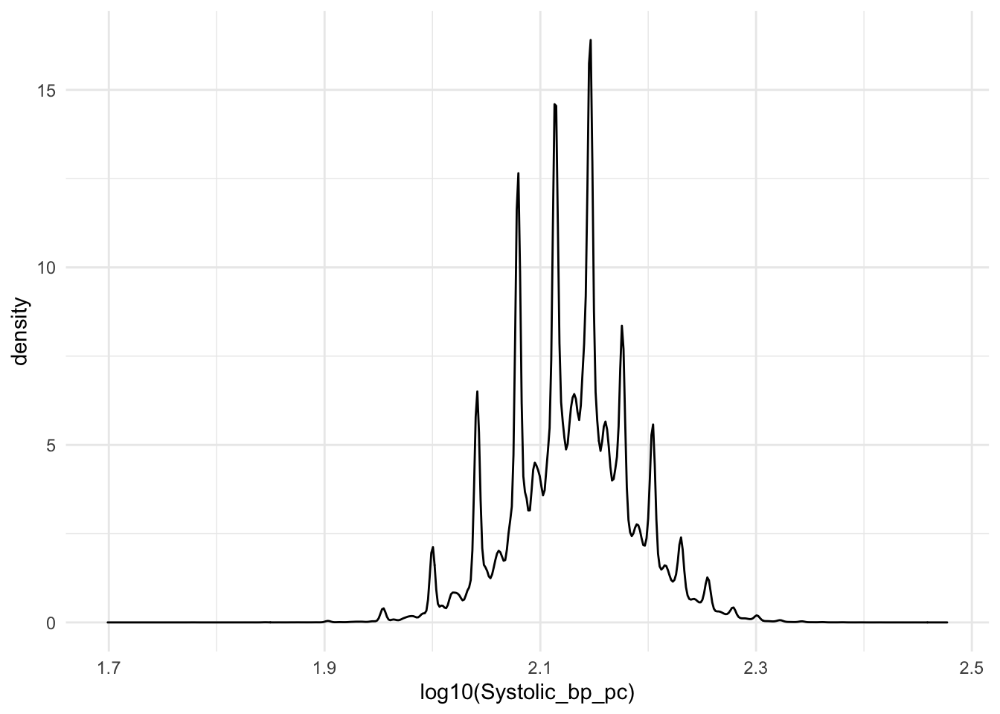
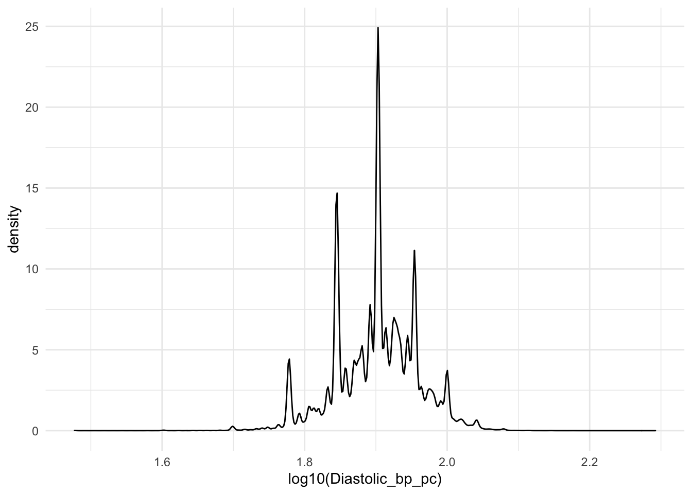

11.13 Blood Pressure
To to extract blood pressure, it is necessary to consider both the cases where both Systolic and Diastolic BP are provided in the same record, as well as cases where Systolic and Diastolic BP are given in separate records.
bp <- gp_clinical %>%
filter(grepl(BP_codes, code)) %>%
filter(value1 != "" | value2 != "" | value3 != "") %>%
mutate(value1 = as.numeric(value1), value2 = as.numeric(value2), value3 = as.numeric(value3))
#Remove some small values in value3 of unknown meaning
bp$value3[bp$value3 < 10] <- NA
#Separate the data into two types of record: One where 2 values are given in 1 record (e.g. Systolic and Diastolic) and another where there is only one value (i.e Systolic only or Diastolic only) given per record. Multiple values per record: Take the larger value to be systolic and the smaller value to be diastolic. Filter out any records where either of these values are 0.
bp_mult <- bp %>%
rowwise() %>%
filter(sum(!is.na(value1), !is.na(value2), !is.na(value3)) == 2) %>%
ungroup() %>%
mutate(Systolic_bp_pc = pmax(value1, value2, value3, na.rm=T)) %>%
mutate(Diastolic_bp_pc = pmin(value1, value2, value3, na.rm=T)) %>%
filter(Systolic_bp_pc != 0 & Diastolic_bp_pc != 0)One value per record: filter out those with a value of 0.
bp_single <- bp %>%
rowwise() %>%
filter(sum(!is.na(value1), !is.na(value2), !is.na(value3)) == 1) %>%
ungroup() %>%
mutate(value = coalesce(value1, value2, value3)) %>%
filter(value != 0) %>%
arrange(f.eid, event_dt) %>%
mutate(bp_type = ifelse(grepl("systolic", term_description, ignore.case=T), "Systolic_bp_pc",
ifelse(grepl("diastolic", term_description, ignore.case = T), "Diastolic_bp_pc", "Unknown"))) %>%
select(-value1, -value2, -value3) %>%
distinct()
#Here are the results for single type:
bp_single %>%
group_by(code, term_description, bp_type) %>%
summarize(n=n(), mean=round(mean(value, 1))) %>%
arrange(bp_type, desc(n)) ## # A tibble: 33 x 5
## # Groups: code, term_description [33]
## code term_description bp_type n mean
## <chr> <chr> <chr> <int> <dbl>
## 1 246A. O/E - Diastolic BP reading Diastolic_b~ 3.13e6 80
## 2 XaJ2F Sitting diastolic blood pressure Diastolic_b~ 3.78e3 80
## 3 XaKFw Average home diastolic blood pressure Diastolic_b~ 3.54e3 79
## 4 XaF4b Average 24 hour diastolic blood pressure Diastolic_b~ 1.72e3 79
## 5 XaF4a Average day interval diastolic blood pressure Diastolic_b~ 8.73e2 83
## 6 246R. Sitting diastolic blood pressure Diastolic_b~ 5.49e2 82
## 7 XaJ2H Lying diastolic blood pressure Diastolic_b~ 4.88e2 80
## 8 246c. Average home diastolic blood pressure Diastolic_b~ 1.08e2 82
## 9 XaF4S Average diastolic blood pressure Diastolic_b~ 8.5 e1 81
## 10 246V. Average 24 hour diastolic blood pressure Diastolic_b~ 1.1 e1 91
## # ... with 23 more rowsLook at the remaining codes to see if they are systolic or diastolic. For many of these, the same code is given twice, each with a different value. Sometimes an record is a duplicate of a systolic or diastolic measurement. If there are two unique values given per ID/date, then we can assume they are systolic (higher) and diastolic (lower). Otherwise, discard that set of values.
#Unknowns - not specified as Diastolic vs. Systolic
unknowns <- bp_single %>%
group_by(f.eid, event_dt) %>%
filter(sum(bp_type == "Unknown") > 0) %>%
mutate(n = length(unique(value))) %>%
filter(n == 2) %>%
mutate(Systolic_bp_pc = max(value)) %>%
mutate(Diastolic_bp_pc = min(value)) %>%
distinct(f.eid, event_dt, value, .keep_all = T) %>%
group_by(f.eid, event_dt) %>%
mutate(code_systolic = code[which(value == max(value))],
code_diastolic = code[which(value == min(value))],
term_description_systolic = term_description[which(value == max(value))],
term_description_diastolic = term_description[which(value == min(value))])
#Prepare for merging
bp_single_less <- bp_single %>%
distinct(f.eid, data_provider, event_dt, value, bp_type, .keep_all = T) %>%
group_by(f.eid, event_dt) %>%
filter(sum(bp_type == "Systolic_bp_pc") == 1 &
sum(bp_type == "Diastolic_bp_pc") == 1) %>%
filter(bp_type != "Unknown")
systolic <- bp_single_less %>%
filter(bp_type == "Systolic_bp_pc") %>%
dplyr::rename(code_systolic = code,
Systolic_bp_pc = value,
term_description_systolic = term_description) %>%
select(-bp_type)
diastolic <- bp_single_less %>%
filter(bp_type == "Diastolic_bp_pc") %>%
dplyr::rename(code_diastolic = code,
Diastolic_bp_pc = value,
term_description_diastolic = term_description) %>%
select(-bp_type)
bp_single_wide <- full_join(systolic, diastolic)
head(bp_single_wide)## # A tibble: 6 x 12
## # Groups: f.eid, event_dt [6]
## f.eid data_provider event_dt code_systolic terminology special_dt
## <int> <int> <date> <chr> <chr> <lgl>
## 1 1000050 3 2007-04-25 2469. read3 FALSE
## 2 1000050 3 2014-11-25 2469. read3 FALSE
## 3 1000068 3 1994-11-30 2469. read3 FALSE
## 4 1000068 3 1999-01-07 2469. read3 FALSE
## 5 1000068 3 2001-07-20 2469. read3 FALSE
## 6 1000068 3 2001-11-21 2469. read3 FALSE
## # ... with 6 more variables: term_description_systolic <chr>,
## # terminology_note <chr>, Systolic_bp_pc <dbl>, code_diastolic <chr>,
## # term_description_diastolic <chr>, Diastolic_bp_pc <dbl>Combine each of the cleaned subsets and implement some common sense filters (45 < Systolic bp < 300, 30 < Diastolic bp < Systolic bp)
unknowns_less <- unknowns %>%
select(-term_description, -value, -bp_type, -code, -n) %>%
distinct()
bp_mult_less <- bp_mult %>%
dplyr::rename(term_description_both = term_description) %>%
dplyr::rename(code_both = code) %>%
select(f.eid, event_dt, data_provider, terminology, Systolic_bp_pc, Diastolic_bp_pc, code_both, term_description_both) %>%
distinct()
full_bp_clean <- full_join(unknowns_less, bp_single_wide) %>%
full_join(bp_mult_less) %>%
filter(Systolic_bp_pc > Diastolic_bp_pc) %>%
filter(Systolic_bp_pc >= 45 & Systolic_bp_pc <= 300) %>%
filter(Diastolic_bp_pc >= 30) %>%
distinct(f.eid, event_dt, Systolic_bp_pc, Diastolic_bp_pc, .keep_all=T)## Joining, by = c("f.eid", "data_provider", "event_dt", "terminology",
## "special_dt", "terminology_note", "Systolic_bp_pc", "Diastolic_bp_pc",
## "code_systolic", "code_diastolic", "term_description_systolic",
## "term_description_diastolic")
## Joining, by = c("f.eid", "data_provider", "event_dt", "terminology",
## "Systolic_bp_pc", "Diastolic_bp_pc")head(full_bp_clean)## # A tibble: 6 x 14
## # Groups: f.eid, event_dt [6]
## f.eid data_provider event_dt terminology special_dt terminology_note
## <int> <int> <date> <chr> <lgl> <chr>
## 1 1000578 2 2002-08-07 read2 FALSE <NA>
## 2 1000578 2 2003-02-10 read2 FALSE <NA>
## 3 1000602 3 2007-09-28 read3 FALSE <NA>
## 4 1017110 2 2003-02-26 read2 FALSE <NA>
## 5 1017110 2 2003-06-04 read2 FALSE <NA>
## 6 1017110 2 2004-03-24 read2 FALSE <NA>
## # ... with 8 more variables: Systolic_bp_pc <dbl>, Diastolic_bp_pc <dbl>,
## # code_systolic <chr>, code_diastolic <chr>, term_description_systolic <chr>,
## # term_description_diastolic <chr>, code_both <chr>,
## # term_description_both <chr>ggplot(data=full_bp_clean, aes(x=log10(Systolic_bp_pc))) + geom_density() + theme_minimal()
ggplot(data=full_bp_clean, aes(x=log10(Diastolic_bp_pc))) + geom_density() + theme_minimal()